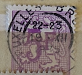
| SOURCE | TITLE| IMAGE MATCH | click to source page |
| Flickr | 1951 - Heraldic lion - 60 centime | Number on Heraldic Lion … | Flickr |  |
| Find Your Stamps Value | Value of belgique 75c stamps | 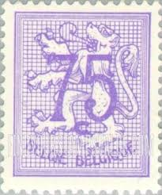 |
| eBay | Purple Belgian & Colonies Stamps for sale | eBay | 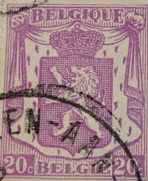 |
| Redbubble | Vintage 1F Belgium Griffin Stamp" Greeting Card for Sale by yousufi | Redbubble | 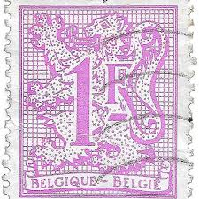 |
| eBay | Belgium Figure on heraldic lion 1f Stamp - Scott 420 - See Scan | eBay | 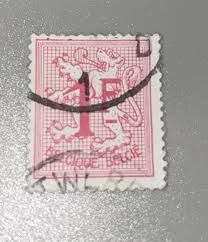 |
| eBay | Belgian Purple Belgian & Colonies Stamps for sale | eBay | 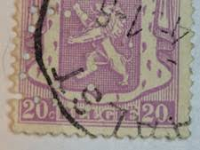 |
| eBay | Machine Cancel Used Belgian Stamps for sale | eBay | 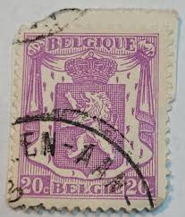 |
| iStock | Postage Stamp Printed In Belgium Shows Coat Of Arms In 1934 Stock Photo - Download Image Now - iStock | 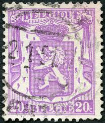 |
| eBay | Las mejores ofertas en Estampillas de púrpura belga Bélgica y Colonias | eBay | 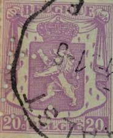 |
| eBay | Belgium 1936 State Arms 20c No Gum Used TKS367* | eBay | 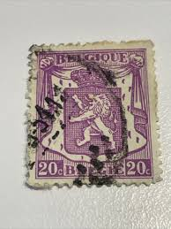 |
| Find Your Stamps Value | Lion Rampant 5fr Bright lilac stamp price, value | 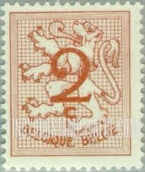 |
| Shutterstock | 4+ Thousand A Mail Lion Royalty-Free Images, Stock Photos & Pictures | Shutterstock | 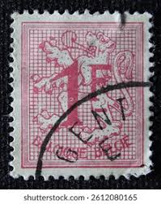 |
| Dreamstime.com | Isolated Belgium Stamp editorial photo. Image of post - 377899281 | 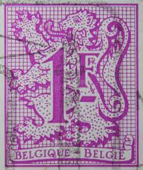 |
| eBay | Belgian Flags, National Emblems Postage Stamps for sale | eBay | 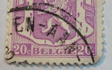 |
| Find Your Stamps Value | Lion Rampant 1fr Rose stamp price, value |  |
| eBay | Belgium Postage ~ Lion Crest ~ 20FR Red Stamp ~ Posted/Used ~ c.1951 ~ G02 | eBay | 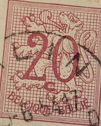 |
| Dreamstime.com | Belgium - Stamp 1907: Standard Edition, Shows Coat of Arms Editorial Photography - Image of appearance, album: 131679602 | 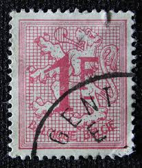 |
| eBay | Belgium 1974 (1728) Cipher | eBay | 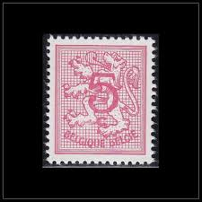 |
| Stamp Auction Network | Sparks Auctions Sale - 14 Page 23 | 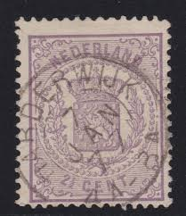 |
| Alamy | 20 c belgian centime hi-res stock photography and images - Alamy | 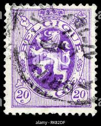 |
| eCRATER | Belgium Postage Stamp 1936 Scott# BE 269 Used 20 c Small Coat of Arms A | 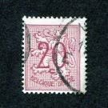 |
| eBay Canada | Orange River British Colony Coat of Arm classic stamp 1900 | eBay | 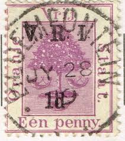 |
| eBay | Belgium 1929 OBP PU26 CANC VF | eBay | 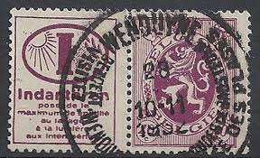 |
| Find Your Stamps Value | Lion Rampant, King Baudouin 2fr, 3.50fr Multicolored stamp price, value | 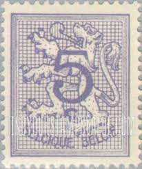 |
| allnumis.com | 20 Centimes 1954 - overprint on 65 Centimes, Coat of Arms - Circulation stamps - Belgium - Stamp - 8878 | 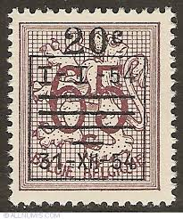 |
| eBay | Belgium N°66 Leopold II Used 75€ | eBay | 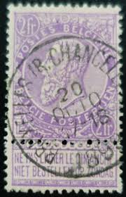 |
| eBay | Netherlands Revenue Fiscal Stamp #2695 | eBay | 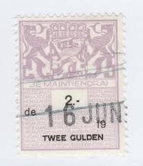 |
| eBay | Vintage Belgium 20 centimes Stamp | eBay | 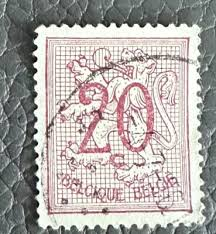 |
| Dreamstime | Vintage 1943 Antique Circulated Banque De France Cinq 5 Francs Note Banknote Currency Back Editorial Photography - Image of sign, worth: 217225362 | 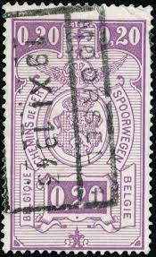 |
| Todocolección | belgica 964/66** - año 1955 - exposicion carlos - Buy Antique stamps of Belgium on todocoleccion | 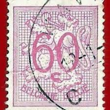 |
| eBay | Belgium 74 Used - King Leopold II - Socked on the Nose | eBay | 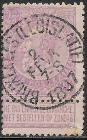 |
| ebid.net | Belgium 1951 - SG1355c - 5f purple - The Belgian Lion - used on eBid United States | 158714853 | 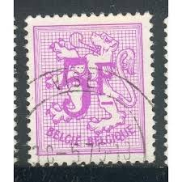 |
| eBay | Belgium Postage ~ Lion Crest ~ 20FR Red Stamp ~ Posted/Used ~ c.1951 ~ Y48 | eBay | 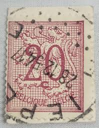 |
| Shutterstock | Postage Stamp Belgium: Over 4,843 Royalty-Free Licensable Stock Photos | Shutterstock | 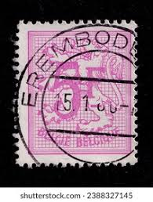 |
| Osta.ee | 1926 Soome/Finland 1½ mark Michel 119 Scott 135 Cat.0.25€ (247237424) - Osta.ee | 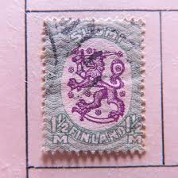 |
| Dreamstime.com | 2,520 Belgium Stamp Stock Photos - Free & Royalty-Free Stock Photos from Dreamstime | 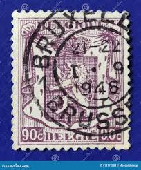 |
| eBay | Finland . Used. Scott's 464c. on cover. Coat of Arms. sal's stamp store | eBay | 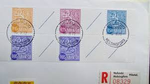 |
| Auction 💥 mystery box! Ends tonight! Old envelope stamps! Unsearched! Starting bid R1 Any increments. Auction ends 2025/06/27 18:30 to the highest bidder. Buyer pays postage Payment within 48hours Pudo and Postnet available. | 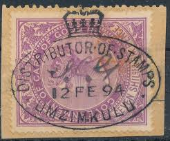 | |
| HipStamp | Belgium #420 Lion Rampant; Used | Europe - Belgium & Colonies, General Issue Stamp / HipStamp | 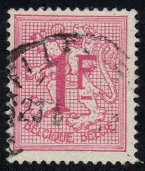 |
| HipStamp | Belgium Official 1930-31 40c Used Stamp A25P60F20958- | Europe - Belgium & Colonies, Stamp / HipStamp | 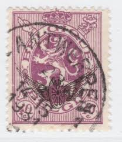 |
| eBay | Belgium Postage ~ Lion Crest ~ 20FR Red Stamp ~ Posted/Used ~ c.1951 ~ C16 | eBay | 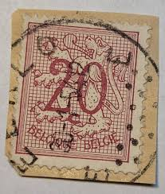 |
| Alamy | BELGIUM - CIRCA 1949: a stamp printed in the Belgium shows Locomotive Type T1, 1862, circa 1949 Stock Photo - Alamy | 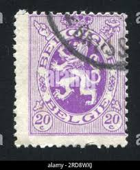 |
| GetArchive | Austria 1854 IIIa NTZL - postal stamp - PICRYL - Public Domain Media Search Engine Public Domain Image | 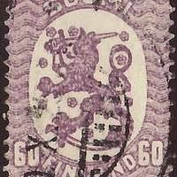 |
| eBay | Belgium - 1974 - Lion - New value #15 - 5C - #2055 | eBay | 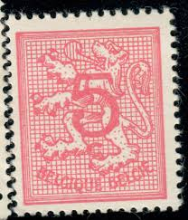 |
| HipStamp | Belgium # 422-423, Lion Rampart with Post Horn Overprint, NH | Europe - Belgium & Colonies, General Issue Stamp / HipStamp | 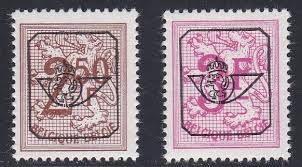 |
| Alamy | Postage stamp belgium hi-res stock photography and images - Page 25 - Alamy | 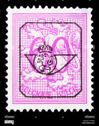 |
| Alamy | Two crowned lions hi-res stock photography and images - Page 2 - Alamy | 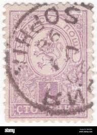 |
| Dreamstime.com | 881 Stamp Standing Stock Photos - Free & Royalty-Free Stock Photos from Dreamstime | 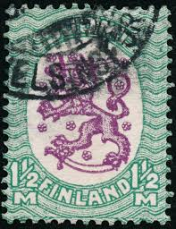 |
| Todocolección | belgica 1951 scott 409 sello º león rampante y - Compra venta en todocoleccion | 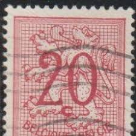 |
| eBay | Norway 1940-41, NK 249 Son Superb Jaren 21-6-46 (OP) | eBay | 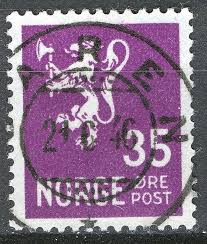 |
| Alamy | Belgium stamp hi-res stock photography and images - Page 12 - Alamy | 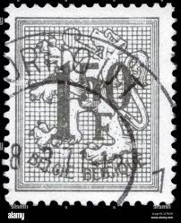 |
| Shutterstock | 7+ Thousand Royal Mail Crown Royalty-Free Images, Stock Photos & Pictures | Shutterstock | |
| Shutterstock | Bulgaria 1889 1 Stotinka Lilac Postage Stock Photo 2642358249 | Shutterstock | |
| Etsy | Antique Postcards, Deutsche Reichspost Postkarte, 3 Different Town Postmarks, Circa 1870's, Philatelic History, Stamp Collectors. - Etsy | |
| Dreamstime.com | Finland 100 Old Stamp Collection Editorial Photo - Image of mail, design: 328061711 | |
| eBay | Belgium Postage ~ Lion in the Coat of Arms ~ Red 20c Stamp ~ c.1951 ~ N66 | eBay | |
| eBay | BELGIUM 75 (Mi67) - King Leopold II "White Paper" (pf88253) "Anvers" | eBay | |
| HipStamp | Belgium #409 20c Lion Rampant | Europe - Belgium & Colonies, General Issue Stamp / HipStamp | |
| JF-Stamps | 1920. Air Mail. | JF Stamps Danmark | |
| eBay | Norway 1926-34, NK 150 Son Våler i Østfold 27-XII-1937 (ØF-Grad 4) | eBay |